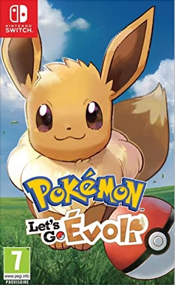
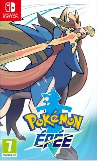
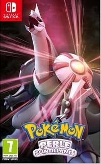

Le joueur peut choisir entre incarner un dresseur et une dresseuse3. Cependant, le Pokémon de départ qui lui est attribué dépend de la version du jeu choisie : Pikachu, pour la version Let's Go, Pikachu, et Évoli, pour la version Let's Go, Évoli. De plus, bien qu'il ne puisse pas évoluer, ce Pokémon est entièrement personnalisable grâce à une panoplie de vêtements qui lui sont dédiés5.
L'histoire, inspirée de celle du jeu Game Boy Pokémon Jaune, se déroule dans la région de Kanto et se concentre uniquement sur les Pokémon de la première génération, soit cent-cinquante-et-un6.
L'action de Pokémon Épée et Pokémon Bouclier se déroule dans une région fictive se nommant Galar où se mêlent campagnes, villes, forêts ou encore montagnes. Au cours de cette nouvelle aventure, les dresseurs peuvent visiter les différentes arènes de cette région, en quête du titre de Maître de la Ligue Pokémon de Galar.
La région de Galar s'inspire du Royaume-Uni et sa forme peut faire penser à celle de la Grande-Bretagne.Par ailleurs, de nombreuses références à la ville de Londres peuvent y être observées : une tour ressemblant à Big Ben, une grande roue semblable au London Eye, des lieux similaires à Piccadilly Circus et Trafalgar Square ou encore une arène comparable au stade de Wembley.


L'action de Pokémon Diamant Étincelant et Perle Scintillante se déroule à Sinnoh, basée sur la région japonaise d'Hokkaidō. Insulaire, elle est constituée de quatorze villes peuplées par des humains et de routes terrestres et maritimes qui les relient entre elles. Chaque zone géographique de la région est habitée par différentes espèces de créatures appelées Pokémon.
Si le joueur prend le personnage masculin, Louka de Bonaugure est le protagoniste de Pokémon Diamant et Perle, sinon ce sera Aurore, le protagoniste féminin et personnage important de la série. Louka ou Aurore vit à Bonaugure, dans la région de Sinnoh.